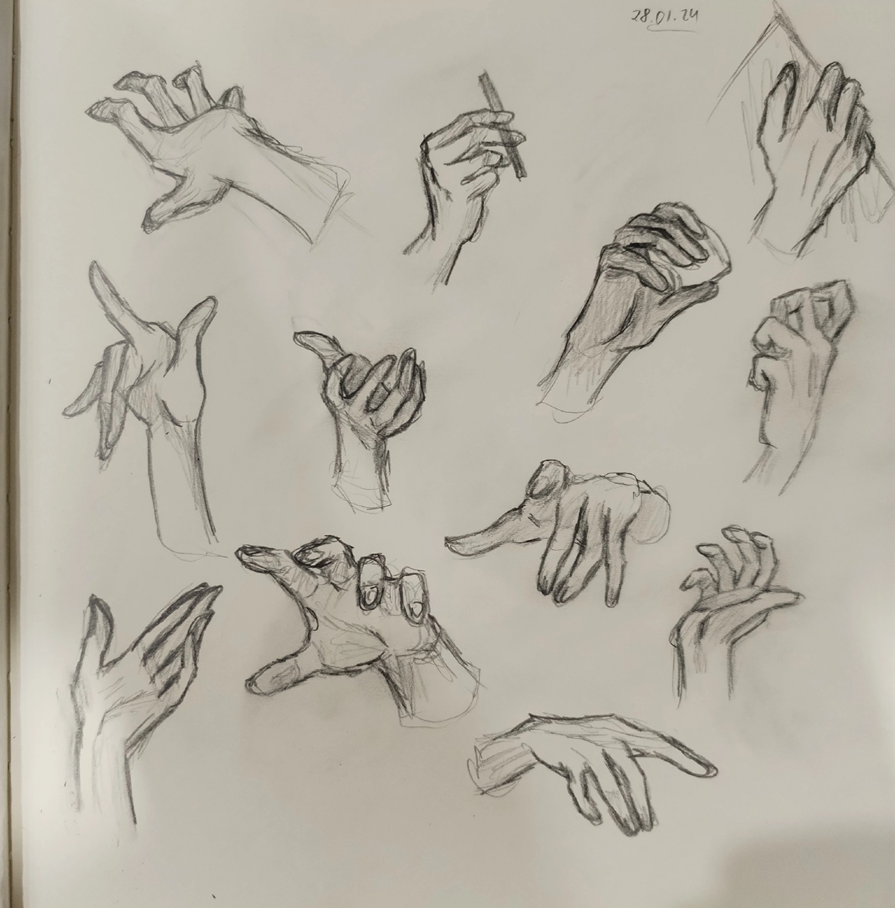
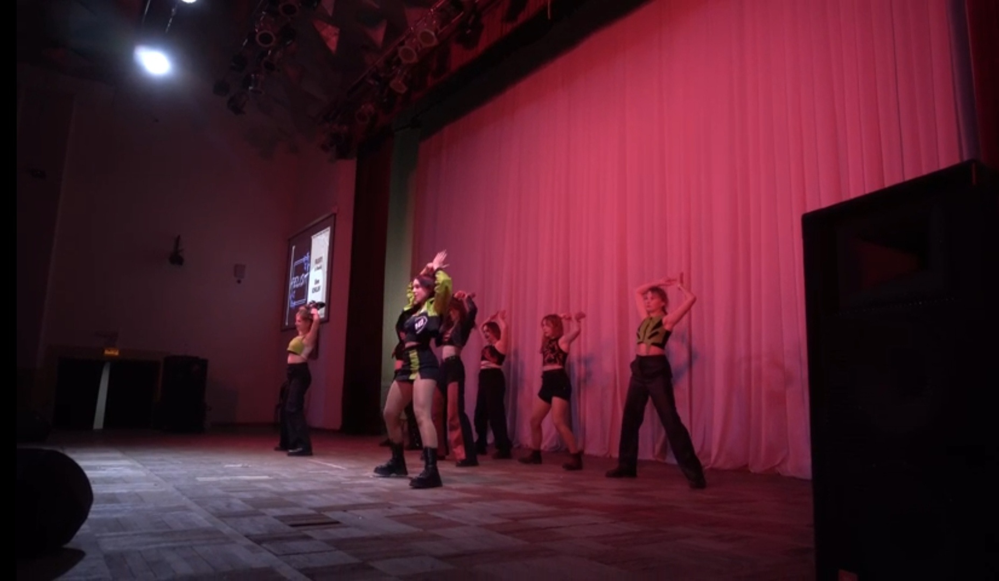
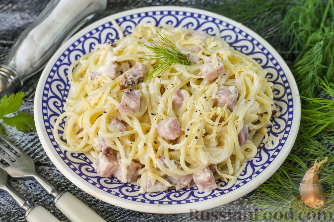

ФИО: Шаршукова Диана Алексеевна
Дата рождения: 02.01.2007
Возраст: 17 лет
Место учёбы: ГАПОУ ПО ПКИПТ
Квалификация: Разработчик веб и мультимейдиных приложений
Почта: dianasharshukova2@gmail.com
ВКонтакте: перейти
Гитхаб репозиторий: перейти
Мне многое нравится! Но вот самое основное:
-Рисование
-Каверденс
-Готовка
-Игры
Рисовать я люблю ещё с детства. Сейчас стараюсь улучшать свои навыки, а также учусь работать в диджитал формате. Вот одна из недавних работ:

Каверденс - это воспроизведение танцевальной хореографии. В моём случае это хореографии корейских исполнителей-айдолов. Эти танцы могут включать несколько стилей. Я занимаюсь каверденсом около года и успела побывать с выступлениями на двух фестивалях.

Интерес к готовке у меня тоже возник довольно рано. Я благодарна маме, что научила меня готовить. Конечно, сильно сложные блюда я приготовить не смогу, но делать что-то съедобное или даже вкусное я вполне умею. Лучше всего у меня получается паста в сливочном соусе, которая входит в список моей любимой еды!

Поиграть в телефончике или компуктере я большой любитель! Сейчас играю в геншин импакт, хонкай стар рейл, секай и читаю разные визуальные новеллы. Раньше часто увлекалась всякими фермами, нид фор спид, бродилками и тд. Вот моя рандомная фоточка с геншина: